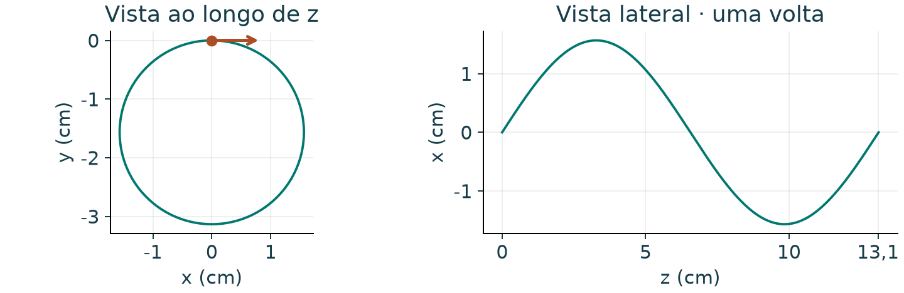

01 · Um próton em trajetória helicoidal
Um próton entra em um campo uniforme B = 0,20 ẑ T com velocidade inicial v = 3,0·10⁵ x̂ + 4,0·10⁵ ẑ m/s. Sem campo elétrico e desprezando efeitos relativísticos, determine a força inicial, o raio da hélice, o período e o avanço axial por volta.
Como começar
Separe a velocidade em componentes paralela e perpendicular a B. Use a força magnética como força centrípeta apenas para a componente perpendicular.
Preveja antes da conta. Qual componente da velocidade determina o raio? Qual determina o avanço?
Resolução passo a passo · exercício 01
01 · Resolução passo a passo
1Ler a direção do campo
O campo aponta em +z. Assim, v⊥ = 3,0·10⁵ m/s e v∥ = 4,0·10⁵ m/s.
2Encontrar o sentido da força
A componente paralela desaparece. Como a carga é positiva, a força aponta em −y.
3Substituir na força de Lorentz
O sinal descreve a componente inicial em y.
4Igualar à força centrípeta
Cancele um fator v⊥ e isole r.
5Calcular uma volta e o avanço
Use o raio antes de arredondar. A velocidade axial permanece constante.

r ≈ 1,57 cm; T ≈ 328 ns; passo p ≈ 13,1 cm; força inicial em −ŷ.
A força magnética não realiza trabalho: F·v = 0. O módulo da velocidade e a energia cinética permanecem constantes.
Erro a evitar: Não usar a velocidade total no raio. Quem curva é v⊥, e quem determina o passo é v∥.